This page brings together basic information about the Tai Viet script and its use for the Tai Dam language. It aims to provide a brief, descriptive summary of the modern, printed orthography and typographic features, and to advise how to write Tai Dam using Unicode.
The Tai Viet script is used for writing the Tai Dam (Black Tai or Tai Noir), Tai Dón (White Tai or Tai Blanc), Tai Daeng, Thai Song (Lao Song or Lao Song Dam) and Tày Tac languages spoken in Vietnam, Laos, China and Thailand. There is also a diaspora in the United States, Australia and France.
The total population using the three languages, across all countries, is estimated to be 1.3 million (Tai Dam 764,000, Tai Dón 490,000, Thai Song 32,000). The script is still used by the Tai people in Vietnam, and there is a desire to introduce it into formal education there.
Little is known about the origin of the Tai Viet script. It appears to have been derived from the Thai script around the 16th century.
Significant variation occurs in the orthographic conventions of the Tai languages, as well as in their phonologies. A unified, standardized version of the script, with an agreed upon core set of characters, was developed at a UNESCO-sponsored workshop in 2006, and subsequently accepted for encoding in The Unicode Standard.
Unicode 17 has 1 dedicated Tai Viet block, comprising 72 characters.
The Tai Viet script is an alphabet, ie. all vowels are written explicitly, alongside consonants; there is no inherent vowel in a consonant (abugidas), certain vowels are not systematically dropped (abjads), and consonant and vowel are not combined in the same character (syllabaries).
The Tai Viet script is heavily syllable-based, with exceptions being a very small number of unstressed initial syllables, and loan words.
This page lists 6 composite vowel signs, made from 6 vowel signs and 3 consonants. Composite vowel signs can involve up to 3 glyphs, though usually only 2, and glyphs can surround the base consonant(s) on 2 sides.
Tai Viet uses visual placement: only the vowel components that appear above or below the consonant are combining marks; the others are ordinary spacing characters that are typed in the order seen.
Tone can be indicated either by diacritics or ordinary spacing characters. Both are a recent innovation. Combining tone marks always follow the root consonant and any combining vowels, ie. they come before any post-base vowel. Spacing tone marks always come at the very end of the syllable.
Consonants Tai Dam has 42 basic consonant letters, all neatly divided into 2 classes. Each consonant is associated with a high or low class to indicate tone.
Vowel absenceThere are no conjuncts or subjoined consonants.
Coda sounds use a subset of 8 ordinary consonant letters, but since there is no inherent vowel, it is still simple to detect syllable boundaries. Syllable-final consonant sounds are also built into 6 vowel-consonant graphemes.
Numbers There are no native Tai Viet digits. ASCII digits are used.
Layout Tai Dam text runs left to right in horizontal lines. Words are separated by spaces, although this is a recent innovation. Letters have no case distinction.
The visual forms of letters don't usually interact.
The Tai languages are almost exclusively monosyllabic. A very small number of words have an unstressed initial syllable, and loan words may be polysyllabic.b
Syllables follow the pattern C (w) V (C)
Syllable onsets are normally simple, but may have a medial -w-.
Syllable codas include -p -t -k -ʔ, which create 'checked' syllables, and otherwise -m, -n, -ŋ, as well as the glides -j, -w.
Vowels
Plain
Complex
Standalone carriers
ꪲ,ꪳ,,ꪴ
ꪸ, ,ꪹ◌, ,ꪺ◌
ꪮ,ꪯ
ꪹ◌ꪸ, ,ꪶ◌
ꪹ◌ꪷ
ꪻ◌
ꪵ◌, ,ꪷ,ꪮ,ꪯ
ꪵ◌ꪫ,ꪵ◌ꪫꪥ
ꪰ,ꪱ
ꪼ◌,ꪹ◌ꪱ,ꪾ,ꪽ,ꪚꪾ
Post-consonant vowels
None of the combining marks are spacing marks (meaning that none of them consume horizontal space when added to a base consonant).
Basic vowels
The basic Tai Viet vowel sounds are written as follows. The list includes both letters and combining marks, and sometimes combinations of both. See componentV.
Vowels are typically long in open syllables, and short in syllables with codas.
The dotted circle indicates the position of the consonant(s) relative to the vowel sign, rather than indicating a combining mark.
ꪲ,ꪳ,ꪴ,ꪹ◌ꪸ,ꪶ◌,ꪹ◌ꪷ,ꪵ◌,ꪷ,ꪮ,ꪯ,ꪰ,ꪱ,
Vowel letters are visually encoded, ie. if a vowel letter is displayed to the left of the base consonant, it is typed and stored before the consonant, too. Any combining marks are typed and stored after the base consonant.
eg.
ꪹꪔꪸꪣ
ꪹ,ꪔ,ꪸ,ꪣ
ꪵꪒꪙꪒꪲꪙ
ꪵ,ꪒ,ꪙ,ꪒ,ꪲ,ꪙ
ꪀꪷꪵꪀ
ꪀ,ꪷ,ꪵ,ꪀ
ꪮ and ꪯ in principle represent the glottal stop, but they can also represent vowels when used after a consonant. The following word in fact shows the same character being used as both consonant and vowel in the same word.b
eg.
ꪮꪮꪀ
ꪮ,ꪮ,ꪀ
ꪵ should not be typed as two successive ꪹ characters.
Diphthongs & rhymes
Tai Viet writes a number of dipthongs and rhymes as follows.
ꪸ,ꪹ◌,◌ꪺ,ꪻ◌,ꪵ◌ꪫ,ꪵ◌ꪫꪥ,ꪼ◌,ꪹ◌ꪱ,ꪾ,ꪽ,ꪚꪾ
eg.
ꪻꪚꪼꪣ꫁
ꪜꪺ
ꪵꪁꪫꪥ
ꪙꪾ꫁ꪹꪚꪸ꫁
-ap. The last item in the list above is rather unusual. Some dialects use the combination ꪚꪾ for the rhyme -ap, where the vowel is placed over the final, low-series b, rather than over the initial consonant.
eg.
ꪀꪚꪾ
ꪀ,ꪚ,ꪾ
See writing_styles, however, for a font variant setting that allows you to store the code points in the normal order, but still displays the AM over the BO.
Composite vowel signs
Vowels represented by combinations of the above characters include the following, which mostly add glyphs to different sides of the base:
ꪹ◌ꪱ,ꪹ◌ꪸ,ꪹ◌ꪷ,ꪵ◌ꪫ,ꪵ◌ꪫꪥ,◌ꪚꪾ
Pre-base and post-base vowel glyphs are split around the syllable onset, which may be more than a single character. fig_prebase shows an example.
ꪲ,ꪳ,ꪴ,ꪶ,ꪮ,ꪯ,ꪰ, ,ꪻ,ꪼ,ꪽShow which combinations contain a given character:
ꪹ
ꪹ-ꪸ,ꪹ-ꪷ, ,ꪹ-ꪱ
ꪵ
ꪵ-ꪫ
ꪱ
ꪹ-ꪱ
ꪸ
ꪹ-ꪸ
ꪷ
ꪹ-ꪷ
ꪫ
ꪵ-ꪫ
ꪚ
-ꪚꪾ
ꪾ
-ꪚꪾ
Show details about glyph positioning
The following list shows where vowel signs are positioned around a base consonant to produce vowels, and how many instances of that pattern there are. The figure after the + sign represents combinations of Unicode characters,
5 pre-base, eg. ꪶꪁok
3 post-base, eg. ꪁꪱkā
6 superscript, eg. ꪁꪲki
1 subscript, eg. ꪁꪴku
2 pre+post-base, eg. ꪹꪁꪱɨᵊkā (kaʷ)
2 pre+superscript, eg. ꪹꪁꪱɨᵊkā (ke)
1 post+superscript, eg. ꪁꪜꪾkp̄aᵐ (kap)
Vowel components
The following breaks down the list of characters used for Tai Dam vowels by type.
Tai Dam uses the following combining marks for vowels.
ꪲ,ꪳ,ꪴ,ꪷ,ꪰ,ꪸ,ꪾ
The following are dedicated vowel letters. Five of these are typed and stored before the onset consonant (see prebase), and only 3 appear after.
The dotted circle indicates the location of the base consonant — these are not combining marks. They are typed and stored in visual order (see prebase).
ꪶ◌,ꪵ◌,◌ꪱ,ꪹ◌,◌ꪺ,ꪻ◌,ꪼ◌,◌ꪽ
The following characters that are normally regarded as consonants are also used to create vowel sounds, either alone or as part of a composite vowel sign.
ꪮ,ꪯ,ꪫ,ꪥ,ꪚ
Pre-base vowel signs
Five CV combinations are written using vowel signs that appear to the left of the onset consonant.
ꪹ,ꪶ,ꪵ,ꪻ,ꪼ
Like Lao, Tai Viet uses a visual encoding model, so these characters are not combining characters, but are typed and stored before the base.
eg.
ꪵꪣꪫ
ꪵ,ꪣ,ꪫ
In fact, these vowel signs are placed before the start of the syllable onset. This means that in a word that begins with more than one consonant letter (ie. in labialised consonants) the pre-base vowel is placed to the left of the syllable-initial consonant, rather than to the left of the consonant after which it is actually pronounced.
fig_prebase shows an example to graphically illustrate the relationships between the characters.
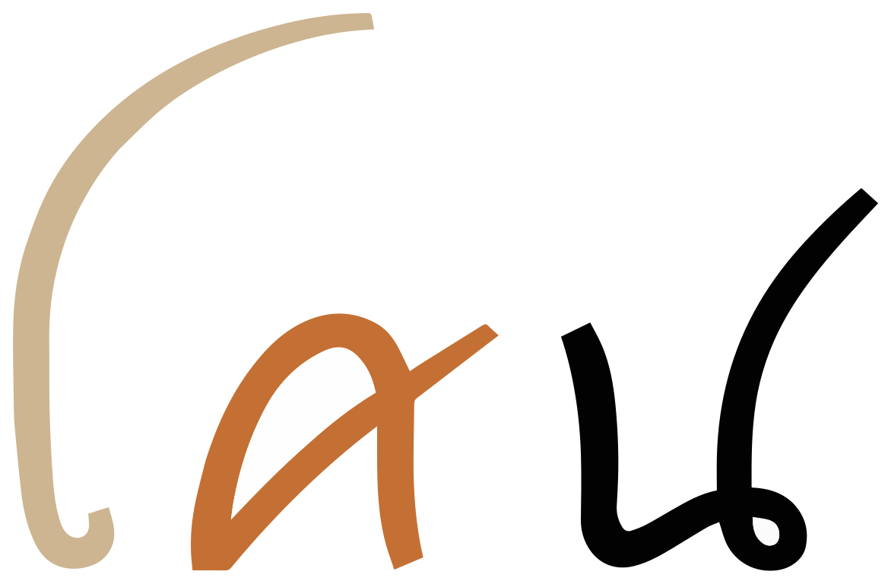
A vowel sign that appears 2 characters out of sequence from where it is pronounced, because the syllable onset is 2 characters long.show composition
ꪵꪁꪫꪥ
Standalone vowels
Vowels in Tai Dam are always preceded by a consonant, but that consonant may be a glottal stop, written using ꪮ or ꪯ followed by the relevant vowel sign(s). There are no independent vowels.
Until the latter part of the 20th century Tai Viet didn't mark tones other than by the consonant class. Since then, however, 2 methods have developed.
Vietnam The Tai community in Vietnam developed an approach where tone is marked by ordinary spacing characters that are typed and stored after all other elements in the syllable.
ꫀ,ꫂ
Diaspora Tai Dam speakers in the United States and speakers of the Song language borrowed combining tone marks from Lao/Thai. These tone marks are typed and stored immediately after any combining vowel sign, if there is one, otherwise after the initial consonant(s).
꪿,꫁,
The following illustrates the different positioning for diacritic and letter tone marks, used for the same word, pɔm˦apple.
ꪝ,ꪮ,ꪣ,ꫀ
ꪝ꪿,ꪮ,ꪣ
Mapping tones & characters The following chart shows how to tell which tones are associated with a syllable.
Consonant
Checked?
Tone mark
Tone
Digit
Example
low
unchecked
—
˨
1
ꪀꪱ
ꫀ or ꪿
˦˥
2
ꪎꪲꫀ / ꪎꪲ꪿
ꫂ or ꫁
˨˩
3
ꪐꪱꫂ / ꪐ꫁ꪱ
checked
—
˦˥
2
ꪎꪲꪚ
high
unchecked
—
˥
4
ꪉꪴ
ꫀ or ꪿
˦
5
ꪝꪮꪣꫀ / ꪝ꪿ꪮꪣ
ꫂ or ꫁
˧˩
6
ꪡꪱꫂ / ꪡ꫁ꪱ
checked
—
˦
5
ꪩꪴꪀ
Vowel sounds to characters
This section maps Tai Dam vowel sounds to common graphemes in the Tai Viet orthography.
Plain vowels
i
dependent vowelꪲ
ɨ
dependent vowelꪳ
u
dependent vowelꪴ
e
circumgraph vowelꪹ◌ꪸ
o
prescript vowelꪶ◌
ə
circumgraph vowelꪹ◌ꪷ
ɛ
prescript vowelꪵ◌
ɔ
prescript vowelꪷonly in open syllables.
prescript vowelꪮin closed syllables.
prescript vowelꪯ(seems to be rare)
a
dependent vowelꪰ
aː
dependent vowelꪱ
Diphthongs and rhymes
iə
dipthongꪸ
ɨə
prescript dipthongꪹ◌
uə
dipthong◌ꪺ
ʷɛ
circumgraph dipthongꪵ◌ꪫ
circumgraph dipthongꪵ◌ꪫꪥin some dialects, to avoid ambiguity.
əw
prescript dipthongꪻ◌
aj
prescript vowelꪼ◌
aːw
circumgraph dipthongꪹ◌ꪱ
am
rhymeꪾ
an
rhymeꪽ
ap
rhymeꪚꪾ
Vowel absence
Vowel absence principally occurs either when a consonant is a syllable coda, or when a consonant is part of a consonant cluster.
Consonant clusters involve no special characters or viramas. There are no conjunct forms or subjoined consonants.
Syllable codas generally use a selection of ordinary letters, but some characters represent rhymes that include the syllable coda. See finals.
Syllable-initial consonant clusters are limited to labialisation, which is written using separated letters (see onsets).
Consonants
High class
Low class
Onsets
ꪝ,ꪛ,ꪕ,ꪗ,ꪋ,ꪓ,ꪁ,ꪇ,ꪯ
ꪜ,ꪚ,ꪔ,ꪖ,ꪊ,ꪒ,ꪀ,ꪆ,ꪮ
ꪡ,ꪫ,ꪏ,ꪅ,ꪭ
ꪠ,ꪪ,ꪎ,ꪄ,ꪬ
ꪣ,ꪙ,ꪑ,ꪉ
ꪢ,ꪘ,ꪐ,ꪈ
ꪧ,ꪩ,ꪥ
ꪦ,ꪨ,ꪤ
Medial
ꪫ
Codas
ꪚ,ꪒ,ꪀ
ꪣ,ꪙ,ꪉ
ꪫ,ꪥ
Rhymes
ꪾ,ꪽ,ꪜꪾ
Logographs
ꫛ,ꫜ
Basic consonants
Basic consonant sounds in Tai Dam are written using the following letters.
Click on each letter for more details and for examples of usage, especially where more than one sound is indicated.
low
ꪜ,ꪚ,ꪔ,ꪒ,ꪀ,ꪆ,ꪮ,ꪖ,ꪊ,ꪠ,ꪪ,ꪎ,ꪄ,ꪬ,ꪢ,ꪘ,ꪐ,ꪈ,ꪦ,ꪨ,ꪤ
high
ꪝ,ꪛ,ꪕ,ꪓ,ꪁ,ꪇ,ꪯ,ꪗ,ꪋ,ꪡ,ꪫ,ꪏ,ꪅ,ꪭ,ꪣ,ꪙ,ꪑ,ꪉ,ꪫ,ꪧ,ꪩ,ꪥ
Other dialects
Three pairs of consonants are used for the Tai Don language, but not for Tai Dam.btd They are:
ꪟ,ꪞ,ꪍ,ꪌ,ꪃ,ꪂ
Onsets
Tai Dam labialises an initial velar consonant in some syllables, but doesn't otherwise have consonant clusters in syllable onsets. The labialisation is indicated using the ordinary letter ꪫ; there are no dedicated medial consonants.
eg.
ꪁꪫꪱꪣ
ꪄꪷꪄꪫ꪿ꪱ
The pronunciation of a consonant followed by VO can be ambiguous if there is no diacritic present and the vowel sign appears before the base. For example, the following does not involve labialisation:
eg.
ꪵꪄꪫ
ꪵꪄ,ꪫ
The following pairs illustrate how a vowel sign or a tone diacritic can resolve the ambiguity.
cf.
ꪀꪲꪫḵiw
ꪀꪫꪲḵwi
cf.
ꪵꪀ꫁ꪫɛḵ²wkɛw
ꪵꪀꪫ꫁ɛḵw²kʷɛ
In order to address the ambiguity when no diacritic is present, the character ꪥ may be appended to the end of the sequence, indicating labialisation.
eg.
ꪵꪁꪫꪥ
Since j never occurs after ɛ, this can be done without creating a new ambiguity. This spelling is only used in some dialects of the traditional script, however, it has been adopted as a standard in a project sponsored by the Son La Department of Science and Technology.b
The sound kʰʷ exists in Tai Don, but not in Tai Dam. The sound kʷ exists in both languages.btd
Codas
Syllable-final plosives are written using the following low class consonants. These create 'checked' syllables.
ꪚ,ꪒ,ꪀ
For open syllables ending with nasals or glides, the following high class consonants are used.
ꪣ,ꪙ,ꪉ,ꪥ,ꪫ
In addition, Tai Dam has ways of writing several rhymes, where a vowel sign represents a vowel sound followed by a final consonant. See vowels. These include:
ꪾ,ꪽ,-ꪜꪾ,ꪹ-ꪱ,ꪼ,ꪻ
Consonant sounds to characters
This section maps Tai Dam consonant sounds to common graphemes in the Tai Viet orthography.
The labels on the left show whether this consonant is high class, low class, or a coda.
Sounds listed as 'infrequent' are allophones, or sounds used for foreign words, etc. Light coloured characters occur infrequently.
p
highꪝ
lowꪜ
codaꪚ
codaꪚꪾ
See also the rhymes for -ap.
b
highꪛ
lowꪚ
t
highꪕ
lowꪔ
codaꪒ
tʰ
highꪗ
lowꪖ
t͡ɕ
highꪋ
lowꪊ
d
highꪓ
lowꪒ
k
highꪁ
lowꪀ
kon⁴
logographꫛ
ɡ
highꪇ
lowꪆ
ʔ
highꪯ
lowꪮ
codaꪀ
f
highꪡ
lowꪠ
v
highꪫ
lowꪪ
s
highꪏ
lowꪎ
x
highꪅ
lowꪄ
h
highꪭ
lowꪬ
m
highꪣ
lowꪢ
codaꪣ
codaꪾ
n
highꪙ
lowꪘ
codaꪙ
codaꪽ
nɨŋ⁵
logographꫜ
ɲ
highꪑ
lowꪐ
ŋ
highꪉ
lowꪈ
codaꪉ
w
labialisation◌ꪫindicates labialisation of a velar onset.
labialisation◌ꪫꪥoccasionally, to indicate labialisation when there is no diacritic to clarify ambiguous spelling.
codaꪫSee also the diphthongs ending in w.
r
highꪧ
lowꪦ
l
highꪩ
lowꪨ
j
highꪥ
lowꪤ
codaꪥSee also the diphthongs ending in j.
Symbols
The Tai Viet Unicode block contains no characters with the general property symbol, however it contains 2 letters that act as logograms.
ꫛ,ꫜ
ꫛ means person, and is used to distinguish between homophonous wordsb§9 such as
cf.
ꫛ
ꪶꪁꪙ
ꫜ is a ligature for the word one. b§9
cf.
ꫜ
ꪙꪳꪉꫀ
Numbers
There are no native Tai Viet digits. ASCII digits are used.
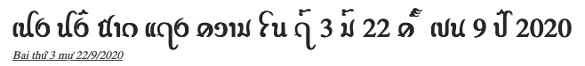
Observation: Examples of dates in Tai Viet. (source)
Text direction
Tai Viet text runs left to right in horizontal lines.
Glyph variants. The Tai Heritage Pro font has font features that allow the following alternative glyph shapes for certain characters.
feature
code point
alternative shapes
lcoa
ꪊ
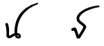
htoa
ꪕ
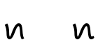
hpho
ꪟ
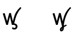
auea
ꪻ
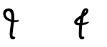
hoia
꫞
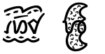
Context-based shaping & positioning
Contextual positioning. Combining marks need to be positioned relative to the shape of the base that they are combined with. fig_vowp shows an example: the combining marks are higher to the right than the left, because of the size of the glyphs below.
Location of combining marks. The Tai Heritage Pro font offers a variant feature that allows placement of combining vowel signs and tones over the onset consonant, or over the final consonant in a closed syllable, see fig_vowp. The underlying sequence of code points is identical.
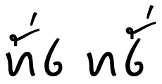
Font feature vowp as default (left), and set to 2 (right).
Whereas the code point sequence remains the same for the example just shown, the same font feature can also be used to support a different code point sequence for AABE. By default, the code point order for the left-hand example in fig_vowp1 would be:
ꪊꪚꪾ
With the vowp feature set to 1, combining marks appear over the onset, except for this specific combination. This means that you can use the code point sequence:
ꪊꪾꪚ
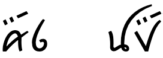
With the vowp feature set to 1, combining marks appear over the onset (as shown on the left), except in the sequence AM + LOW VO (right).
Typographic units
Word boundaries
Unlike many other Tai scripts, Tai Viet uses spaces between words.b However, this is a fairly recent innovation. Polysyllabic words may be written without space between the syllables.u
Brase provides some algorithmic detail for handling older texts without spacing.btd
Graphemes
Tai Viet has syllables that include free-standing vowel signs before and/or after the base.
eg.
ꪹꪉꪱ
Tai Viet users do not expect these to be connected to the onset consonant. When a cursor moves across text, they expect it to stop before and after each of these characters, and not skip the complete syllable. All spacing characters behave this way.
Punctuation & inline features
Phrase & section boundaries
phrase
,
sentence
.
poems
꫞
꫟
Observation: The UDHR text contains regular ASCII punctuation, including commas, periods, and colons, as well as dashes to separate text. Some examples can be seen in the sample text at the start of this page.
Observation: Example ASCII punctuation in UDHR. (source)
Dashes. Dashes are used to separate phrases.
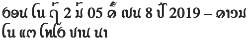
Observation: Example of en-dash in Tai Viet. (source)
Poems & songs. The only native punctuation in the Unicode Tai Viet block is for poems and songs: ꫞ marks the beginning and ꫟ marks the end of the text.
Bracketed text
Tai Dam commonly uses ASCII parentheses to insert parenthetical information into text.
start
end
standard
(
)
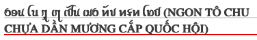
Observation: Examples of parentheses in Tai Viet. (source)
Abbreviation, ellipsis & repetition
Repetition.ꫝ indicates repetition of the previous word.
Line & paragraph layout
Line breaking & hyphenation
tbd
Observation: The primary break point for text seen online is the inter-word space.
Tai Viet uses the so-called 'alphabetic' baseline, which is the same as for Latin and many other scripts.
fig_baselines shows glyphs from the Tai Heritage Pro font. Tai Viet extenders and combining marks, extend well beyond the Latin ascenders and descenders, creating a need for much larger line heights.
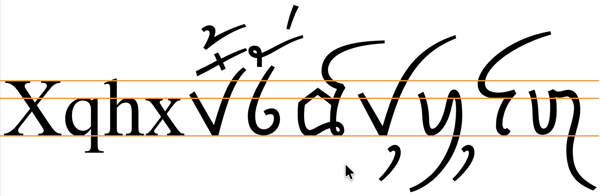
Font metrics for Latin text compared with Tai Viet glyphs in the Tai Heritage Pro font.